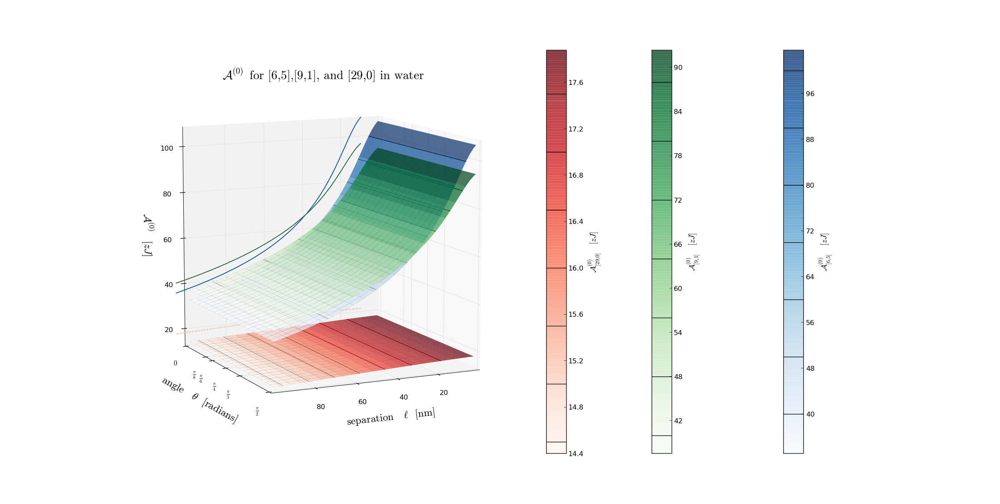

Next:
Hamaker 2: for [6,5],
Up:
Fully Retarded
Previous:
Fully Retarded
Contents
Hamaker 0:
for [6,5], [9,1], and [29,0] in water
Figure 10:
for [6,5], [9,1], and [29,0] in water. No theta dependnce

Jaime 2014-04-09